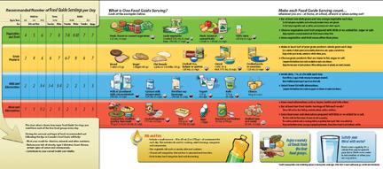
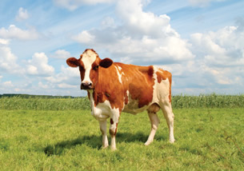
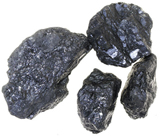
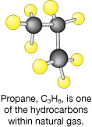

Module 1—Thinking Energy
 Going Beyond
Going Beyond

The Canada Food Guide identifies types of foods and suggested quantities for consumption.
Food is more than just calories and kilojoules. The updated Canada Food Guide focuses on serving size and the number of servings eaten per day. In Modules 5 and 6 you will learn more about the carbohydrates, proteins, and fats contained in foods. You will also discover how these dietary components perform vital functions for your body.
You may wish to use the Internet to obtain a copy of the Canada Food Guide or to find dietary information for athletes. This information will help you learn more about how appropriate nutritional and dietary choices can affect the health of your ecotour participants.
 Module 1: Lesson 1 Assignment
Module 1: Lesson 1 Assignment
How much energy do you consume each day by eating?
Retrieve the Module 1: Lesson 1 Assignment that you saved to your computer earlier in this lesson. You will record your personal energy intake in a spreadsheet. Complete the Assignment and save it in your course folder. You will receive information later in this lesson on when to submit your Assignment to your teacher.
The Sun—The Ultimate Energy Source

© Jan Brons/shutterstock
Regardless of what food you eat, the energy you consume originally came from the sun. Solar energy is converted into chemical potential energy by plants as they photosynthesize. The energy contained within plants and/or animals is captured by living organisms when the plants and/or animals (the food) undergo a chemical reaction like digestion or combustion.
hydrocarbon molecule: a chemical compound containing only hydrogen and carbon atoms
 
© pixelman/shutterstock
Coal is one type of fossil fuel composed of hydrocarbon molecules.
Fossil fuels, such as coal, petroleum, natural gas, and oil sand, are an important energy source. Fossil fuels contain hydrocarbon molecules. Hydrocarbons typically tend to be high-energy molecules, since the chemical bonds between carbon atoms and between hydrogen and carbon atoms store a relatively large quantity of potential energy. Burning a fossil fuel releases the energy stored in these high-energy bonds. In your home, the combustion of fossil fuels can be used for many purposes, including heating your home.
 Try This
Try This
An Analysis of the Carbon Cycle
The carbon cycle is a summary of the major reactions involving carbon
compounds in the biosphere. You may have seen a diagram of the carbon
cycle in previous science courses. In this activity you will complete
an analysis of a diagram of the carbon cycle.
Procedure
Step 1: Print a copy of the carbon cycle diagram. Examine the diagram to refresh your memory of the carbon cycle and its processes.
Step 2: Prepare a chart listing similarities and differences between the following chemical processes, which are part of the carbon cycle: photosynthesis, cellular respiration, and combustion.
Include an example of a chemical reaction for each process in your chart. You may wish to use the Internet or other resources to find information.
Step 3: Examine the diagram of the carbon cycle. Determine the correct position on the diagram for each term you researched in Step 2.
TR 1. Write a brief paragraph to identify the
important aspects of the carbon cycle.
TR 2. How is a knowledge of the carbon cycle important to your efforts to design an ecotour that will minimize impacts on the environment?
 The answers to TR
questions can be found on the Lesson 1 Assignment of every Module in
this course so be sure to look at the answers after you attempt any TR
questions.
The answers to TR
questions can be found on the Lesson 1 Assignment of every Module in
this course so be sure to look at the answers after you attempt any TR
questions.